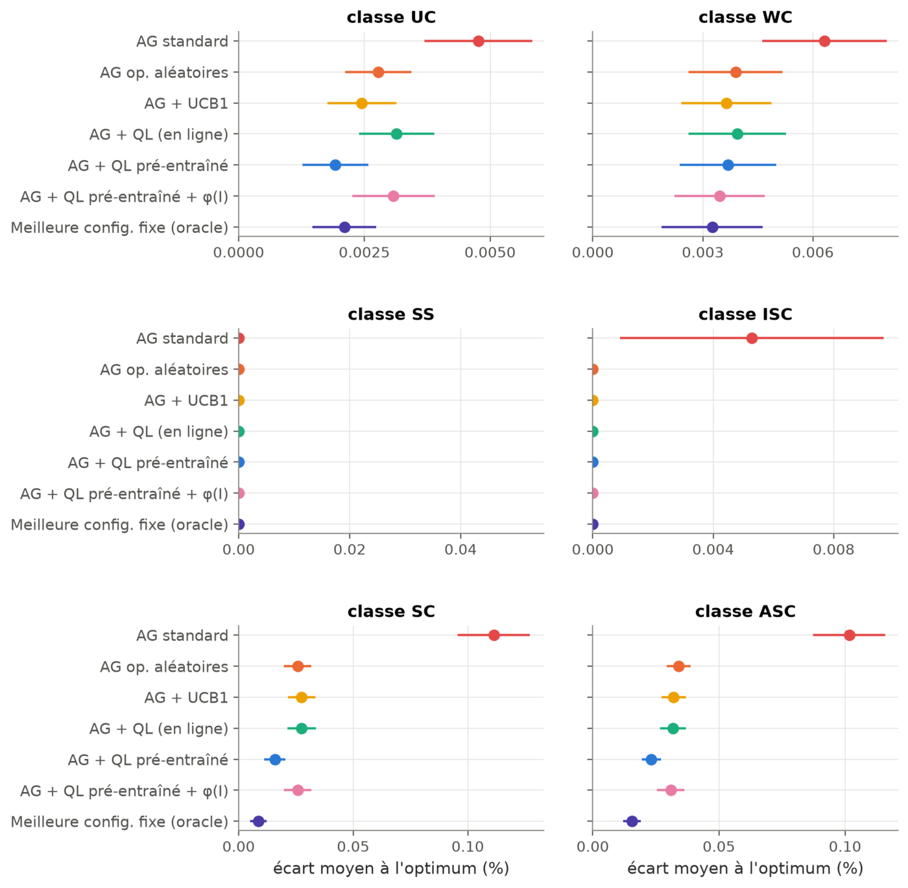
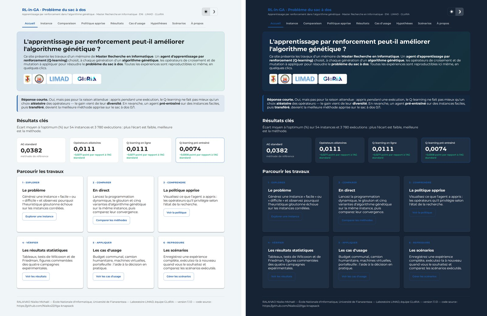

Le travail en bref
Les algorithmes génétiques résolvent efficacement le problème du sac à dos et sa version multidimensionnelle, mais leur performance dépend du choix de leurs opérateurs. Dans ce travail, un agent de Q-learning observe à chaque génération l'état de la population — diversité, stagnation, avancement — et choisit un couple croisement–mutation parmi neuf. L'agent, appris en ligne ou pré-entraîné sur des instances faciles puis transféré, est comparé à la programmation dynamique, à la programmation linéaire en nombres entiers, à l'heuristique gloutonne, à une sélection aléatoire des opérateurs et à un bandit UCB1, sur 143 instances et jusqu'à 10 000 objets.
Principaux résultats
0,0382 % → 0,0074 %écart moyen à l'optimum : algorithme génétique standard, puis piloté par Q-learning pré-entraîné (54 instances générées)
0,0407 % → 0,0174 %même comparaison sur 31 instances de référence, dont les instances difficiles de Jooken et al.
3 à 8 foismoins d'écart que l'algorithme génétique standard lors du passage à l'échelle
0,335 % → 0,236 %sur 58 sacs à dos multidimensionnels, sans gain propre du transfert
- Confirmé — piloter l'algorithme génétique réduit nettement l'écart à l'optimum ; le pré-entraînement apporte un gain propre à l'apprentissage.
- Nuancé — appris en ligne sur une seule exécution, le Q-learning ne fait pas mieux qu'une sélection aléatoire des opérateurs ; le gain vient alors de la diversification.
- Limites — le transfert vers le sac à dos multidimensionnel n'apporte pas de gain, l'heuristique gloutonne l'emporte au-delà de 5 000 objets, et les méthodes exactes restent supérieures sur les instances de taille modérée.
Écart à l'optimum par classe d'instances

L'application interactive
